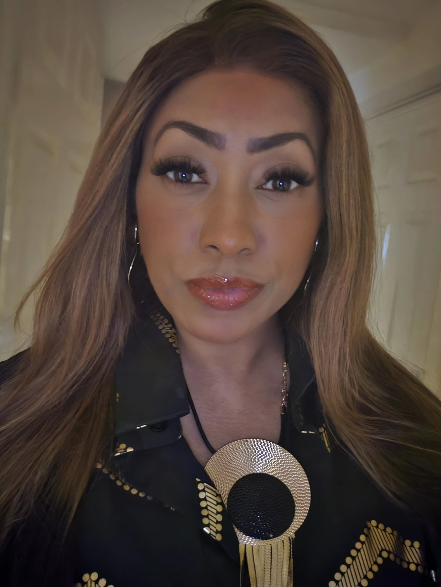
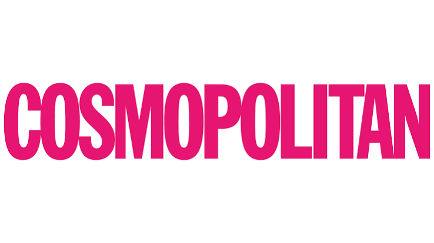
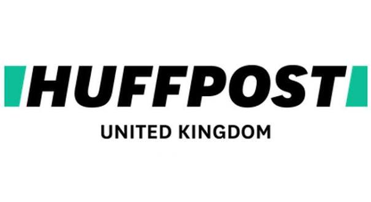
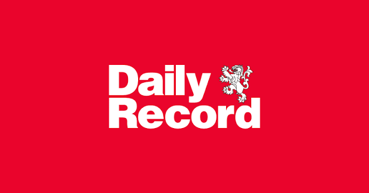
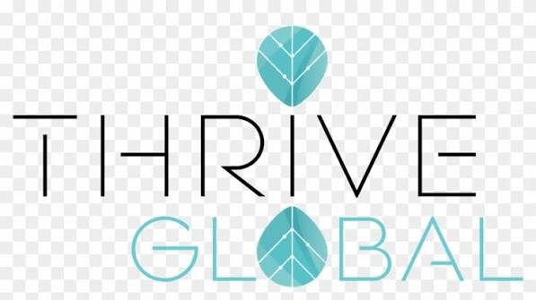
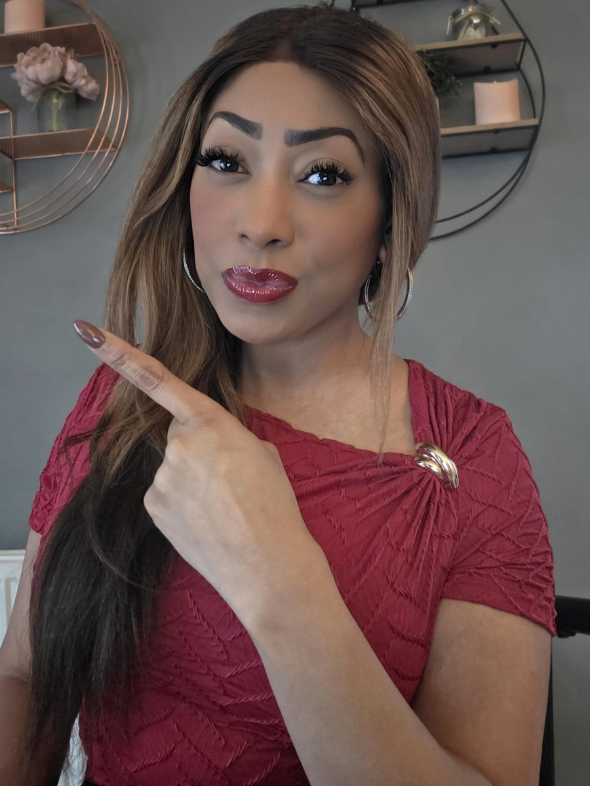

Igniting Intimacy: 12 Powerful Questions to Transform Your Relationship
Twelve reflective questions designed to open up honest conversation between partners.

Relationship & Emotional Well-being Expert
Practical, human-centred support for healthier relationships, stronger communication and emotional well-being, for organisations and individuals.
Awards & recognition


IAPC&M Accredited Master Coach, and appointed Head of Mental Health & Well-being for IAPC&M members.
Recognised across the media




A supporting framework
S.A.F.E.™ brings together four reference points for healthier relationships, clearer communication and greater emotional awareness: feeling secure, staying aligned with what matters, moving toward fulfilment, and building the confidence that comes with feeling empowered.
Why Teresha
Credibility built through accreditation, industry recognition, media experience and years of work across both organisational and private-client settings.


The podcast
Conversations on relationships and emotional well-being, with guests including Paul C. Brunson, Susan Winter and Charlene Douglas.
Resources
Twelve reflective questions designed to open up honest conversation between partners.
A day-by-day structure for building small, consistent pockets of personal time into daily life.
Get in touch to talk about organisational support, private coaching, or a media and speaking enquiry.